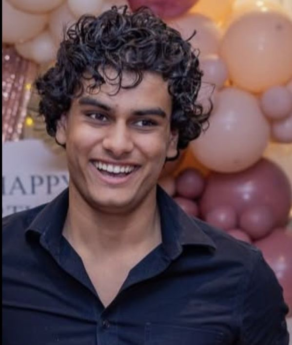

UNIVERSITY OF TORONTO · COMPUTER SCIENCE + MATHEMATICS
PLAYER ONE
A portfolio by Waleed Shammarez
SOFTWARE · MACHINE LEARNING · THINGS THAT MOVE
A portfolio by Waleed Shammarez
Each signal opens a project build log. Use your mouse or Tab + Enter.
Pick a project signal to open its file. The game menu is the map.
On mobile, tap Play and select a project from the list.